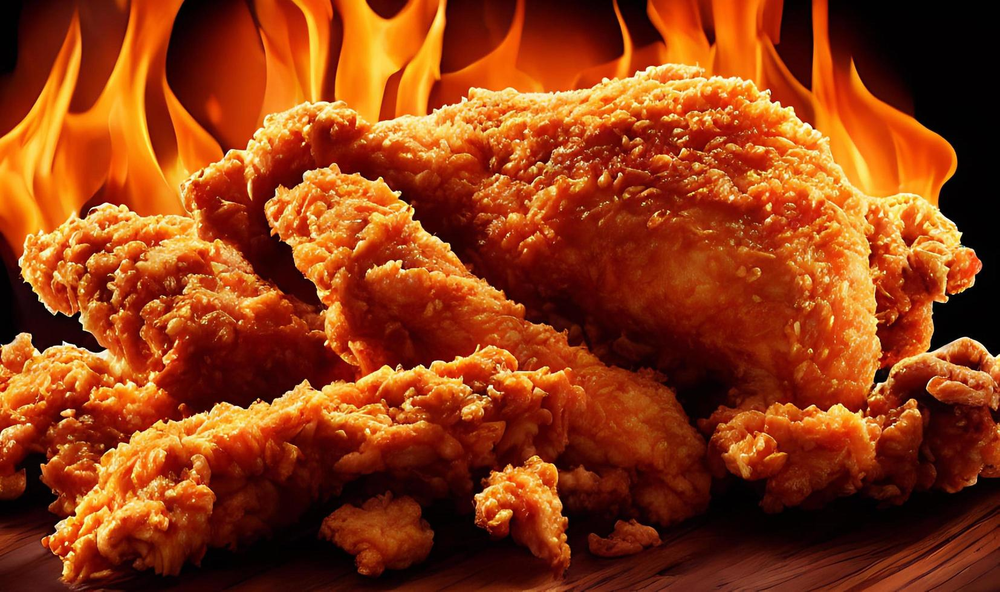

INTRODUCTION
Fried chicken also known as southern fried chicken is a dish consisting of chicken pieces
that are coated in seasoned flour containing 11 herbs and spices before being deep-fried to produce a crispy, golden brown hue.
And that is the tastiest, most delicious fried chicken you have ever had.

INGREDIENTS
- 1 KG OF CHICKEN
|
- FLOUR
|
- 11 HERBS & SPICES
|
- RED CHILLI POWDER
|
- PAPRIKA POWDER
|
- WHITE PEPPER POWDER
|
- GARLIC POWDER
|
- GINGER POWDER
|
- OREGANO
|
- THYME
|
- PARSLEY
|
- CELERY SALT
|
- GARLIC SALT
|
- MUSTARD POWDER
|
- SALT
|
- BLACK PEPPER POWDER
|
- MSG
|
- SUGAR
|
- VEGETABLE OIL
|
- EGGS
|
- BUTTERMILK (FOR BRINE THE CHICKEN)
|
- COLD WATER
|
METHOD
- I brought one kilogram of chicken here with its legs, wings, and drumsticks. Clean and Wash the chicken.
- After one hour drain the chicken well. marinate the chicken with select 11 herbs and spices some salt and pepper and eggs. we have already added some salt so adjust the salt as per Marinate overnights.Marinate at least 4 hours for better results.
- Next, we need to coat to marinated chicken in seasonal flour and add refined flour and 11 herbs and spices to a bowl. mix well to combine. add marinated chicken to this flour one at a time. just cover the marinated chicken in flour for a light coating.
- After coating each piece of chicken immediately sieve the flour to remove the lungs in the flour. They should follow after coating each batch of chicken and also in the second coating. Doing this will reduce the wastage of flour and form a perfect crust.
- Now we need to make the second coating for that takes some cold water in a bowl. Dip each piece of chicken in the water for 3 to 4 seconds then add to the flour. Before starting cover the chicken in seasonal flour then rub it with flour in a clockwise direction. Remember never to let the chicken come in contact with your hands and keep your hands dry always before touching the flour.
- Rub this until you get a nice crust over the chicken. Always prepare one batch of chicken at a time and fry it immediately will oil. Otherwise, the crust becomes soggy and starts sticking.
- Heat some oil in a pan. Oil temperature should be low to medium always. Add chicken to the oil. cook for 4-5 minutes until it gets a nice light golden brown color.
- With this our crunchy KFC Style Fried Chicken Is Ready. Just Serve it hot with tomato ketchup or hot sauce a best combination.